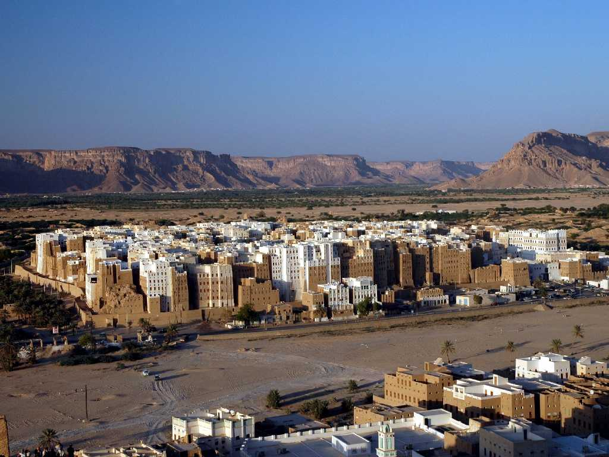
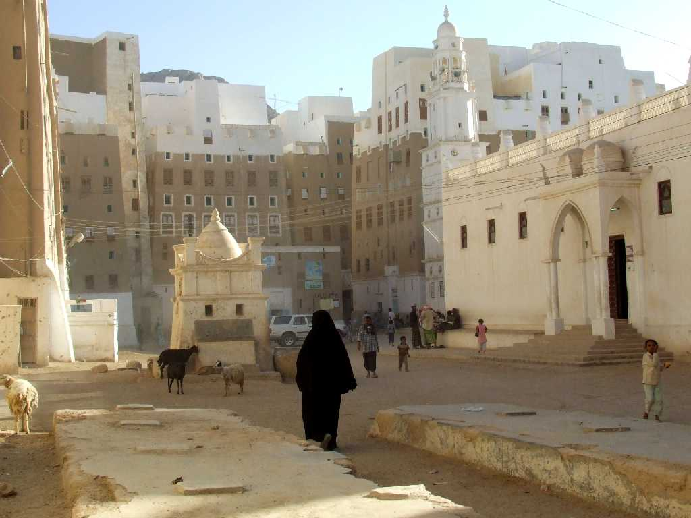
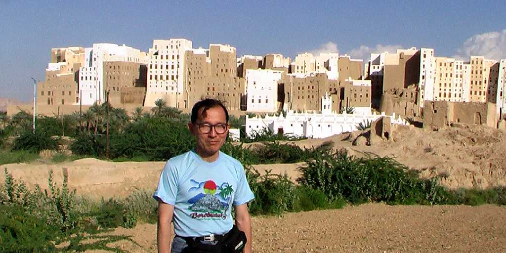

２０００年前から町が形成されハドラマウト王国の首都として発展し洪水や放牧民の襲来を守るため堅固な城壁で囲われた旧市街は５００年前に現在の街並みが創られた世界最古の高層建築群で５００棟余りの５階から９階建ての日干し煉瓦造り高層建築物が生きている美しい砂漠の摩天楼都市シバーム

Old town Shibam
紀元前８世紀より紀元後３世紀まで栄えた旧約聖書のシバの女王で有名なシバ王国の交易都市として乳香取引の中継基地を担った 乳香はローマやエジプトに輸出され同じ重さの金と取引されイエメンはローマ時代には幸せのアラビアと呼ばれた

January 25 2009 Shibam